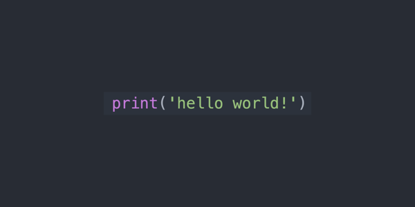
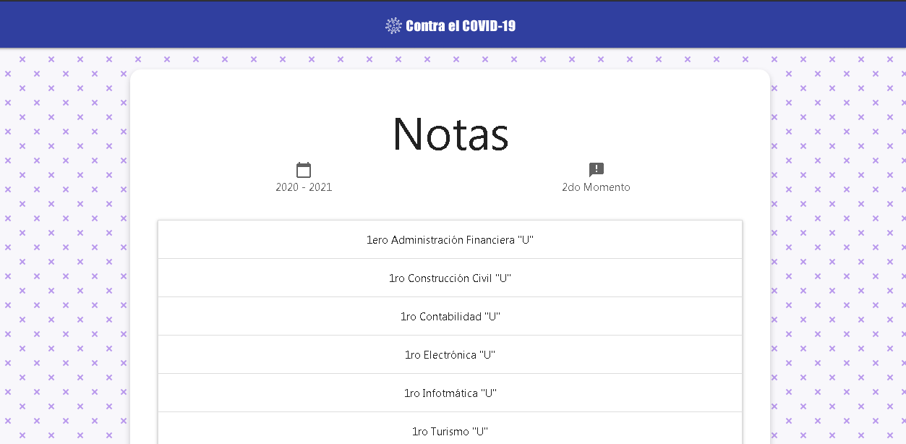
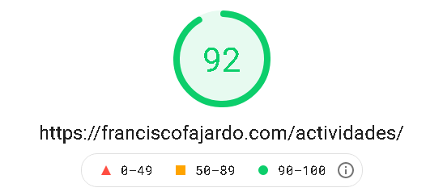
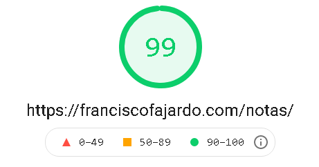

Página 3 / 6
Sistema Web NF
Cuando el año escolar terminaba siempre daban las notas en una nómina, puesto tras una vitrina o simplemente dictandole la nota a cada estudiante, pero los tiempos cambiaron, ya no existe eso, la pandemia arrasó con eso y mucho más. Así qué, ¿cómo se podrían entregar las notas este nuevo año escolar?, hay un nuevo Sistema Web AF, ¿no podría haber algo tipo Sistema Web NF?
Pues no lo hay, pero lo puede haber, así que me puse manos a la obra y decidí crearlo, sin que la E.T. "Francisco Fajardo" me pidiera hacerlo, lo hice por mi cuenta. Tenía muchas ideas en mente de como hacer esto, así que no sabía por donde empezar, podría haberlo hecho con Laravel pero es un proyecto bastante sencillo por lo que no querría todas las herramientas que me ofrece este framework. Y aquí entra un concepto llamado no casarte con las tecnologías, las tecnologías se mueren, los tiempos avanzan y van saliendo otras, otros conceptos, o nuevas maneras de hacer las cosas, pero siempre tienes que tratar de mantenerte actualizado a los tiempos. Y es por eso que aunque me gusta mucho trabajar con Laravel, no lo voy a usar en todos los proyectos solamente para hacer un "Hello World".

También pensé en hacerlo con React.js o Vue.js, simplemente era una API sencilla la que no requería mucha seguridad, y una implementación sencilla en el frontend, pero eso haría que acabe el proyecto en más tiempo, aunque sea sencillo. Entonces, lo decidí hacer con solamente PHP, ¿por qué?, básicamente este sistema solo lo usara una sola persona, un directivo o alguien del departamento de evaluación, no necesitaba crear acceso personalizado con correo o usuario, contraseña, y agregar seguridad a todas estas cosas. Así que por que no usamos algo como el viejo pero útil FTP.
Uno de los requerimientos de la E.T. "Francisco Fajardo" cuando le comente sobre que estaba empezando este proyecto, fue que las notas debían de ser en formato de imagen, las notas que se iban a entregar a cada curso tiene que ser en ese formato. Así que de ahí que use FTP, podría haber programado el acceso como lo dije antes, la subida de la imagen, el control del peso y la seguridad del archivo, el sistema no puede ser vulnerado por un archivo que se puede subir, y todas esas cosas. Solo tengo que encargarme de lo último, pero de los demás se encarga FTP.
Entonces, lo diseñe con MaterializeCSS. El procedimiento seria el comentado anteriormente, los profesores subirían las notas al servidor FTP, y el sistema las mostraría. En caso de que quieran editarlas reemplazan el archivo, y en caso de eliminar, eliminan el archivo. Este sistema se puede usar para todos los años escolares, no hay bases de datos, solo una carpeta y un archivo PHP que muestra las notas de esta carpeta.

Cuando le das click a alguno de los cursos, te va a cargar la imagen de las notas de ese curso, y la puedes visualizar en cualquier dispositivo y se va a ver correctamente. Pero allí entra otro problema, al ser bastantes cursos, tengo que esperar que carguen todas las notas de todos los cursos para poder verlas, lo que ocasionaría una carga en la página que si bien los estudiantes van a esperar por que son sus notas, no es lo ideal.

El anterior sistema es rápido, carga las actividades al instante, y es por que me esforcé en ello. Me gusta crear cosas ligeras, y es una de las razones por las que no elegí Laravel para este proyecto. Todo tiene sus requerimientos, siempre hay que elegir la opción más optima para resolver un problema. Y como puedes ver en los resultados de Google PageSpeed Insights, el Sistema Web AF tiene un puntaje de 92.
Entonces, ¿cómo resolví el problema de la carga de las imágenes?, fácil, existe algo llamado Lazyload, básicamente, si una imagen no esta en el campo visual del usuario no se carga, solo se cargan las imágenes que se requieran. Es decir, si apenas abriste en el navegador un artículo de un blog no es necesario que se carguen todas las imágenes de ese artículo, por que tu ni siquiera has empezado a leer, y tal vez nunca lo hagas, o tal vez sí. Entonces cuando tu empiezes a bajar el artículo van a irse cargando las imágenes que puedas ver, si vas por la mitad, se cargan la de la mitad, y no las de lo último, y así.
En conclusión, este fue el resultado final, y pueden ver el código en el enlace que esta más abajo, es totalmente Código Abierto y Software Libre, igual que el Sistema Web AF.
